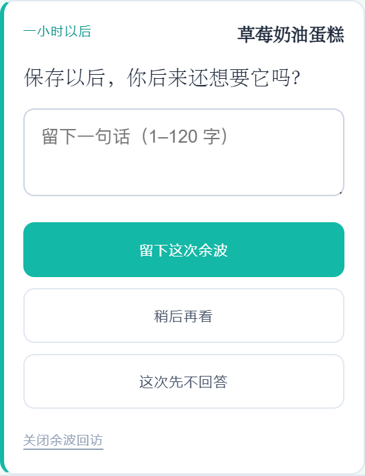
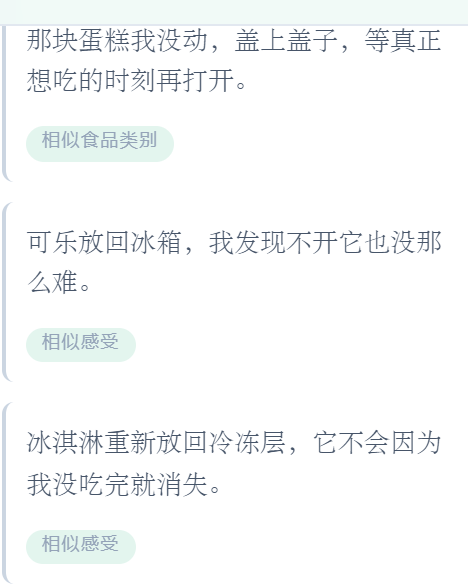
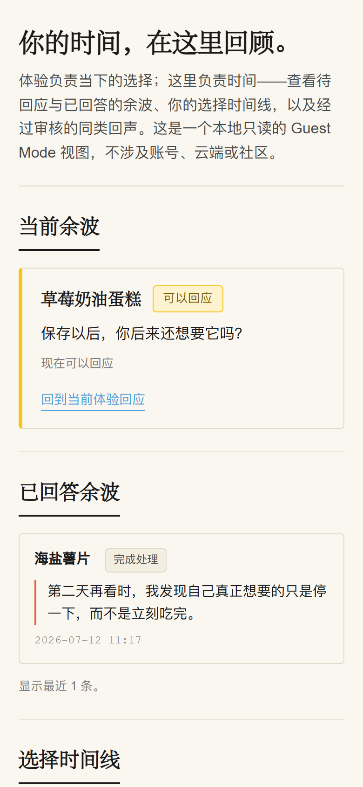

峰值
第一口的冰凉、糖与咖啡因同时到达。最值得的部分可能已经发生在前几口。
不是你出了问题，而是供给与获取环境变了。
食物获得比任何一代人都更容易，但买后纠结没有相应的语言与空间去承接它。
从想起到落地只需十几分钟；冲动购买在抵达前没有缓冲时间。
优惠、囤货、组合装让单次决策变成多日共处，食品在桌上比在胃里更久。
夜晚、压力、奖励、陪伴——食品承担了远比饥饿更多的心理任务。
“买了必须吃完”是一种搬运时代的伦理；它不再解释今晚的真实感受。
传统饮食工具假设你“需要被劝阻”，但真正的问题不是吃多少，而是这次购买已经发生，注意力如何从中走出来。
用同一个食品对象串起峰值、惯性、浪费感与注意力占用。
第一口的冰凉、糖与咖啡因同时到达。最值得的部分可能已经发生在前几口。
味道与气泡在第五口之后开始衰减。继续喝不再是为了满足，而是因为还在手上。
剩下半瓶已经不冰了。倒掉显得浪费，喝完又超出了真实需要。
它没有消失。它在桌角继续提醒你它的存在，比真实口感占据更多注意力。
系统不评判这些阶段，只是承认它：一件食品从峰值到剩余，是一个真实的心理过程。
让“这是什么、多少、什么状态”快速变成一张可以确认的卡片。
拥有一件食品，本来不应该需要填一张表格。Drop Snacks 提供四种进入方式，让信息逐项落位，而不是一次性逼问。
识别品牌、系列、规格、包装状态与可能剩余量。
匹配商品数据库，保留区域与版本差异。
批量识别购买记录，只让需要的进入食品柜。
“我刚打开了一瓶 500mL 可乐，喝了一半。”
后台强理解，前台弱量化。
数据在后台帮助系统理解你，但不会站到你面前评判你。前台不会出现身体评分、健康分或连续记录。
完成不是终点，而是理解这次选择的开始。
系统不立刻要求答案。食品不立即从食品柜消失，但也不再占据主动提醒位。
根据处理方式、时间与历史，系统选择一个最相关的问题。
提醒是邀请，不是任务。连续忽略会自动降低频率；主动回到产品时不再发送重复提醒。
先听见自己，再听见别人。
系统不会在你完成仪式后立刻展示别人的经验。你先回答自己的余波，再看见同类。
匹配从精确商品扩展到同系列、同场景、同心理原因。匿名短句像回声出现，不是瀑布流社区。
没有头像、昵称、社交反馈与位次。聚合比例只有在样本数量足够时展示，避免暴露个人与制造伪权威。
PRODUCT PROOF · 来自真实竞赛演示
食品记录只是理解一次选择发生在什么情境。真正的闭环是：完成选择 → 一小时后的余波 → 先回答自己 → 再听见相似处境的匿名经验。下面三张截图来自官方竞赛演示数据，证明这条路径已经真实存在。

完成处理不立刻要求答案。食品进入“余波等待”，让时间参与判断这次选择是否真的减轻了负担。
查看余波设计
用户先回答自己的余波，系统才展示三段相似处境的匿名经验。没有头像、昵称、点赞或人数。
理解同类回声
私人网页把选择、余波和回声放回个人时间线。无账号、无云端，数据只保存在当前浏览器。
查看私人网页空间